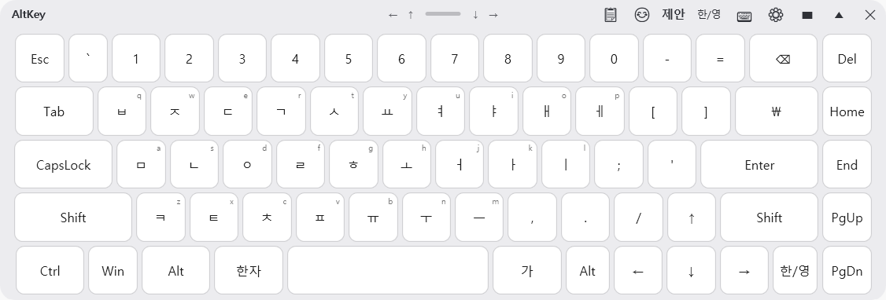
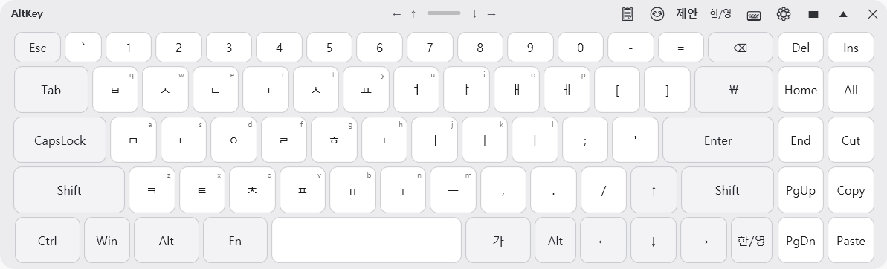
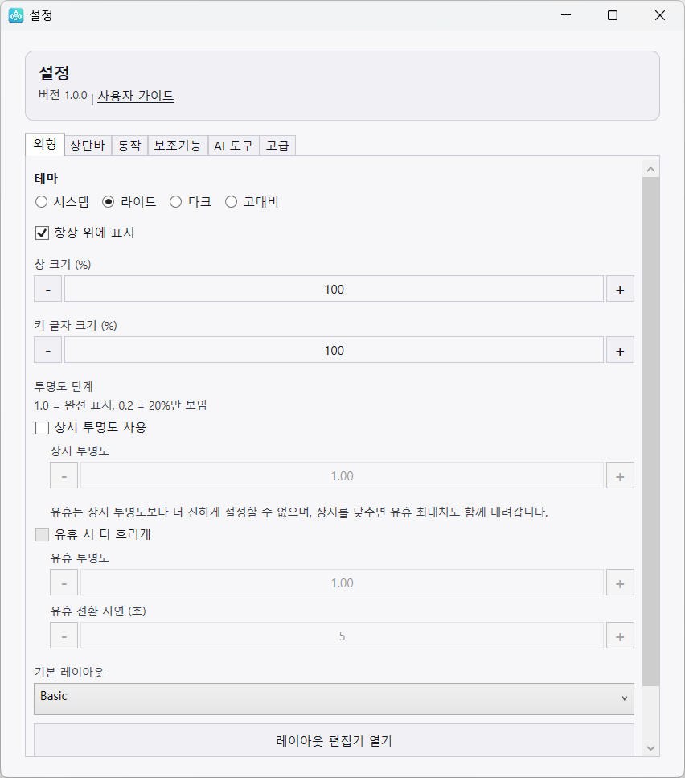
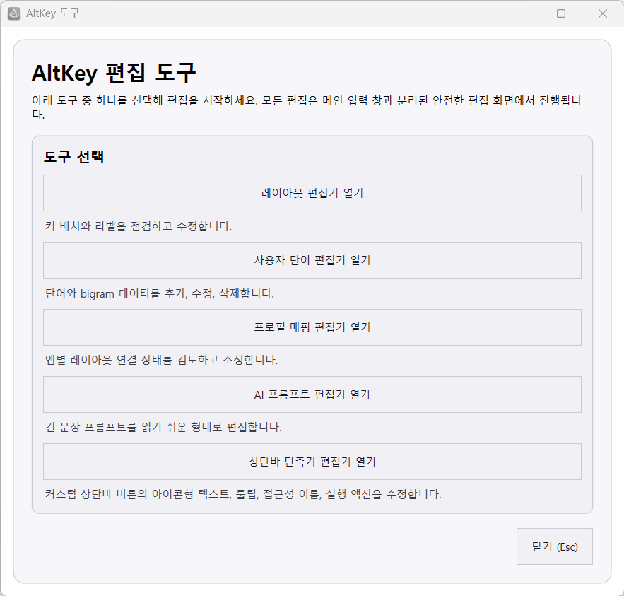

설치 후 실행
설치 프로그램 또는 포터블 압축 파일을 받아 실행합니다. 편집 도구는 함께 포함됩니다.
Windows 10 / 11 · 한국어 전용 · AltKey.Tools 포함
AltKey는 마우스, 터치, 스위치만으로 한글 입력과 자주 쓰는 작업을 처리할 수 있게 돕습니다. 자동완성, 체류 클릭, TTS, 게임 환경에 더 자연스러운 키 입력, 외부 편집 도구를 한 화면 흐름으로 묶었습니다.

Essential
설치 프로그램 또는 포터블 압축 파일을 받아 실행합니다. 편집 도구는 함께 포함됩니다.
자동완성을 켜면 AltKey가 한글을 직접 조합해 보내므로 한/영 상태 오류가 줄어듭니다.
가/A는 AltKey 자판 전환, 한/영은 Windows IME 전환입니다.
Screens



Video
FAQ
처음 설치할 때 많이 헷갈리는 부분과 입력 안정성에 직접 연결되는 질문을 우선 정리했습니다. 자세한 설명은 위키 FAQ 문서로 이어집니다.
가/A는 AltKey 내부 자판 모드를 바꾸고, 한/영은 Windows IME 상태를 바꿉니다.
특히 자동완성을 사용할 때는 AltKey 안의 가/A 토글을 우선 쓰는 편이 입력 상태가 덜 꼬입니다.
대부분의 한국어 사용자에게는 켜는 편을 권장합니다. AltKey가 한글 조합을 직접 관리해 입력 안정성이 좋아지고, 자주 쓰는 단어도 더 적은 입력으로 완성할 수 있습니다.
먼저 가/A 상태가 기대한 모드와 맞는지 보고, 입력 칸을 다시 선택하거나 AltKey를 다시 실행해 상태를 초기화해 보세요.
관리자 권한 앱이나 특수 입력 칸에서는 추가 제한이 있을 수 있으므로, 필요하면 문제해결 문서도 함께 확인하는 것이 좋습니다.
레이아웃, 사용자 단어, 프로필, AI 프롬프트 편집은 입력 중인 메인 키보드와 분리해 두는 편이 더 안정적이기 때문입니다.
이 구조 덕분에 긴 문장 편집과 실제 입력 작업을 섞지 않고, 저장 후 필요한 데이터만 메인 앱이 다시 읽어 반영할 수 있습니다.
그럴 수 있습니다. Windows 보안 정책 때문에 일반 권한 앱이 관리자 권한 앱에 입력을 보내지 못하는 경우가 있습니다.
AltKey는 일반 키 입력을 물리 키보드에 가깝게 보내 게임 호환성을 높였지만, 권한 제한이 걸린 앱은 관리자 권한 재실행이 필요할 수 있습니다.
가능합니다. 설정에서 상단바 버튼 표시와 순서를 조정할 수 있고, 최근 버전에서는 상단바 커스텀 단축키 편집기도 사용할 수 있습니다.
Download
Windows 10 22H2 이상에서 사용할 수 있으며, 최신 릴리스에는 AltKey.Tools가 함께 포함됩니다.